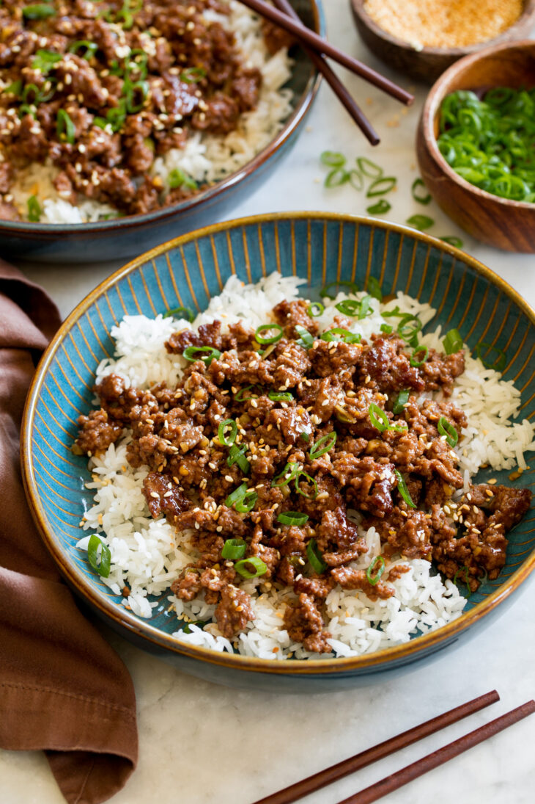

Korean Beef Bowl

Description
These Korean Beef Bowls are so easy to make and taste undeniably delicious!
Ground beef is browned in a hot skillet and finished with a simple, yet flavorful sauce.
It’s an undemanding recipe worthy of the weeknight dinner rotation.
Ingredients
- Honey and brown sugar: You can use only one, or both of these Ingredients.
- Sesame oil and vegetable oil: The sesame oil adds so much the depth of flavor to the dish, it is a critical ingredient.
- Lime: Use fresh lime for best flavor. Rice vinegar can be used as a substitute
- Soy sauce: You can use either normal or low-sodium soy sauce.
- Ground beef: For best results, use higher quality freshly ground beef from the butcher.
- Green onions, garlic and ginger: These aromatics add lots of freshness to the dish.
- Red Pepper flakes: These are optional and you could use Korean red chili powder, cayenne pepper, or gochujang.
- Cooked rice: You can use any type of rice for this.
How to make your Korean Beef Bowl
- Whisk together honey, brown sugar, sesame oil, lime juice, soy sauce, and water.
- Heat Skillet over moderately-high heat. Add oil.
- Break ground beef into chunks then brown ground beef in skillet until halfway cooked.
- Turn beef chunks, add green onions, garlic and ginger and continue to cook
unitl beef is cooked through while breaking up beef.
- Pour in honey mixture. Let simmer, 1 minute.
- Serve warm over rice with desired toppings and sides.
Home
Chicken-Fried Rice Recipe
Brownie Bites Recipe